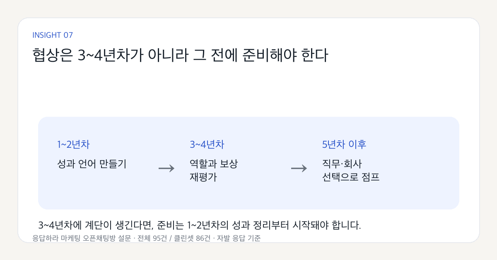

마케터 연봉은 언제 갈릴까?
95명의 응답이가 알려준 현실
연봉표만 보면 “내가 평균보다 높은가, 낮은가”만 남습니다. 그런데 이번 데이터에서 더 선명하게 보인 건 숫자보다 구조였습니다.
안녕하세요. 응답하라 마케팅의 마파입니다.
마케터라면 한 번쯤 이런 생각을 해본 적 있을 거예요. “내 연차에 이 연봉이면 괜찮은 걸까?”, “나는 지금 제대로 받고 있는 걸까?”, “연봉을 올리려면 결국 이직밖에 없을까?” 같은 질문이요.
연봉은 궁금하지만 쉽게 묻기 어려운 주제입니다. 그래서 응답하라 마케팅 오픈채팅방에서 마케터 커리어 및 연봉 실태 설문을 진행했고, 이번 글에서는 연봉 응답을 확인할 수 있는 전체 95건과 비교 가능한 응답만 추린 클린셋 86건을 기준으로 정리했습니다.
이 데이터는 전체 마케터 시장을 대표하는 통계가 아닙니다. 응마 오픈채팅방 자발 응답 기반의 참고 데이터이며, 일부 연봉은 구간형 응답을 중간값으로 환산해 본 값입니다.
이번 글은 단순히 “몇 년차 평균 연봉은 얼마”를 보여주는 글로 끝내고 싶지 않았습니다. 평균은 보기 쉽지만, 마케터 커리어를 설명하기에는 자주 부족합니다. 같은 연차 안에서도 회사 규모, 맡은 채널, 예산 책임, 매출과의 거리, 팀에서의 의사결정 권한이 다르면 연봉은 꽤 다르게 움직이니까요.
- 연봉은 3~4년차 진입 때 한 번 크게 뛰었습니다.
- 같은 3~4년차 안에서도 연봉 격차가 가장 크게 벌어졌습니다.
- 기업 유형은 평균보다 연차 안에서 봐야 차이가 보였습니다.
- 연차만 쌓아서는 연봉 천장을 뚫기 어려웠습니다.
- 평균 하나만 보면 같은 연차 안의 격차가 가려졌습니다.
- 협상은 3~4년차가 아니라 1~2년차의 성과 기록부터 준비해야 했습니다.
- 그 결과 연봉 불만과 이직 고민이 동시에 높게 나타났습니다.
1. 연봉이 크게 뛰는 시점은 3~4년차 진입 때였습니다
1~2년차의 중앙값은 약 3,500만 원, 3~4년차의 중앙값은 약 4,200만 원이었습니다. 3~4년차로 넘어가며 약 700만 원, 비율로는 20% 정도 오른 셈입니다.

이 구간이 사실상 가장 큰 계단이었습니다. 이후에도 연봉은 오르지만 상승폭은 훨씬 완만해집니다. 연차가 쌓일수록 자연스럽게 큰 폭으로 뛰는 구조라기보다, 초반에 한 번 레벨이 정해지고 이후에는 완만하게 흘러가는 모양에 가까웠습니다.
3~4년차는 단순히 “주니어를 벗어나는 시기”가 아닙니다. 내 커리어의 다음 가격표가 붙기 시작하는 시기에 가깝습니다.
2. 3~4년차는 연봉이 가장 심하게 갈리는 분기점이었습니다
이번 응답에서 3~4년차는 전체 표본의 약 37%, 32명이 몰린 구간이었습니다. 그런데 이 구간 안에서 연봉대는 낮게는 3,200만 원대, 높게는 6,500만 원대까지 나타났습니다.

이 격차를 단순히 “누가 더 실력이 좋다”로만 설명하기는 어렵습니다. 개인 실력만큼이나 어떤 회사에 들어갔는지, 어떤 직무 범위를 맡았는지, 어떤 산업에서 일하고 있는지가 연봉 궤적을 크게 가른다는 뜻이기도 합니다.
3~4년차 구간에 응답이 가장 많이 몰렸다는 건, 이 시기의 마케터들이 특히 자신의 위치를 확인하고 싶어 한다는 뜻이기도 합니다. 이제 일은 어느 정도 할 줄 아는데, 내가 미들인지 아닌지, 지금 연봉이 시장에서 어느 정도인지, 다음 회사에서 어떤 역할로 평가받을 수 있는지는 여전히 흐릿한 시기니까요.
이 구간에서 봐야 할 질문
나는 지금 어떤 회사에서, 어떤 역할을, 어느 정도 책임지고 있나?
내 연봉은 연차 때문에 오른 걸까, 역할 때문에 오른 걸까?
3. 기업 유형 차이는 평균보다 연차 안에서 봐야 했습니다
기업 유형별 중앙값만 보면 차이가 크게 보이지 않았습니다. 스타트업, 중소기업, 중견기업의 중앙값이 모두 4,200만 원 선에 붙어 있었습니다. 겉으로 보면 “기업 유형별 차이가 별로 없네?”라고 생각할 수 있습니다.

그런데 연차를 넣어서 보면 이야기가 달라집니다. 스타트업은 3~4년차까지 비교적 높은 값을 보였고, 5~7년차에서는 상승폭이 크지 않았습니다. 반대로 중견기업은 5~7년차에서 값이 크게 올라갔습니다. 중소기업은 상대적으로 낮게 출발하지만 연차가 쌓이며 꾸준히 올라가는 흐름을 보였습니다.
여기서 중요한 건 “어느 유형이 무조건 낫다”가 아닙니다. 초반에는 스타트업이 더 좋아 보일 수 있고, 어느 시점 이후에는 중견의 보상 구조가 더 강해질 수 있습니다. 중소기업도 역할이 넓어지면 상승 흐름이 생길 수 있습니다.
그러니까 회사 유형을 볼 때는 이름표보다 구조를 봐야 합니다. 내가 맡을 예산이 있는지, 성과를 숫자로 말할 수 있는 역할인지, 리더가 마케팅을 비용이 아니라 성장 동력으로 보는지가 같은 기업 유형 안에서도 연봉의 길을 다르게 만듭니다.
4. 마케터 연봉의 천장은 생각보다 낮게 나타났습니다
이번 데이터에서 가장 아쉬웠던 지점은 연봉 천장이었습니다. 8~10년차 중앙값도 약 5,500만 원 수준이었고, 7,000만 원을 넘는 응답은 전체 연차를 통틀어 많지 않았습니다.

이건 단순히 “8~10년차 연봉이 낮다”는 말로 끝낼 문제가 아닙니다. 연차만 쌓는다고 자동으로 연봉이 벌어지지 않는다는 뜻에 가깝습니다.
마케터는 연차가 올라가도 역할이 바뀌지 않으면 연봉도 크게 바뀌지 않을 수 있습니다. 계속 운영 실무자에 머무르는지, 예산과 매출을 책임지는지, 브랜드나 사업 목표와 연결된 의사결정에 들어가는지에 따라 몸값이 달라집니다.
조금 거칠게 말하면, 연차가 연봉을 올려주는 게 아니라 역할이 연봉을 올려줍니다.
5. 평균은 생각보다 많은 걸 숨겼습니다
이번 데이터에서 전체 중앙값만 보면 4,200만 원이라는 숫자가 나옵니다. 이 숫자만 보면 꽤 깔끔합니다. “응마 설문 기준 마케터 연봉 중앙값은 4,200만 원 정도구나”라고 정리할 수 있죠.
하지만 이 숫자만 보면 정작 중요한 차이가 가려집니다. 3~4년차 안에서만 봐도 연봉은 3,200만 원대부터 6,500만 원대까지 벌어졌습니다. 전체 중앙값 4,200만 원보다 훨씬 중요한 건, 같은 연차 안에서 내가 어느 위치에 있는지입니다.
평균은 내 위치를 대충 알려줄 수는 있지만, 내 다음 선택을 정해주지는 못합니다. 오히려 분포를 봐야 합니다. 내 연차 안에서 상단에 있는 사람들은 어떤 회사에 있는지, 어떤 역할을 맡는지, 어떤 성과를 말할 수 있는지 봐야 다음 액션이 생깁니다.
6. 협상은 3~4년차가 아니라 그 전에 준비해야 했습니다
3~4년차에 연봉 계단이 생긴다면, 준비는 3~4년차가 되어서 시작하면 늦을 수 있습니다. 1~2년차 때는 당장 연봉 협상보다 일을 배우는 게 먼저라고 생각하기 쉽지만, 이 시기에 아무 기록도 남기지 않으면 3~4년차가 되었을 때 내가 무엇을 잘하는 사람인지 설명하기 어려워집니다.

마케터의 성과는 생각보다 쉽게 흩어집니다. 캠페인 하나가 끝나고 나면 슬랙 대화로 남고, 보고서로 남고, 회고 없이 다음 업무로 넘어가는 경우가 많습니다.
그런데 연봉 협상이나 이직 시장에서 필요한 건 “열심히 했습니다”가 아니라 “어떤 문제를 맡았고, 어떤 방식으로 풀었고, 그래서 어떤 결과를 만들었습니다”입니다.
그러니 1~2년차부터 해야 할 일은 거창한 포트폴리오 제작이 아닐 수 있습니다. 내가 맡은 업무를 성과 언어로 바꾸는 연습, 팀의 결과와 내 기여를 연결해 보는 연습, 반복해서 잘하는 문제 유형을 찾는 연습이 먼저입니다.
7. 연봉 불만과 이직 고민은 이미 꽤 높은 수준이었습니다
응답자의 63%는 현재 연봉이 아쉽다고 답했습니다. 조금 아쉽다는 응답이 40%, 많이 아쉽다는 응답이 23%였습니다. 그리고 84%는 이미 이직을 고민하고 있거나 실제로 준비 중이라고 답했습니다. 고민만 해봤다는 응답이 41%, 실제 준비 중이라는 응답이 43%였습니다.

물론 모든 이직 고민이 연봉 때문만은 아닐 겁니다. 성장 정체, 사수 부재, 회사의 방향성, 업무 범위, 번아웃 같은 이유도 함께 있을 수 있습니다. 하지만 낮은 연봉 천장과 완만한 상승 구조가 이탈 압력을 만들고 있다는 건 분명해 보입니다.
그래서 이 글의 결론은 연봉표가 아닙니다
처음에는 “마케터 연봉 구간을 한 번 보자”는 마음으로 데이터를 봤습니다. 그런데 막상 들여다보니, 중요한 건 숫자 하나하나보다 구조였습니다.
응답이들이 이 데이터를 볼 때 단순히 “나는 평균보다 높다/낮다”로만 보지 않았으면 합니다. 그보다 지금 내 역할이 더 커지고 있는지, 다음 연봉 협상에서 말할 수 있는 성과가 정리되어 있는지, 내 직무가 회사의 매출이나 성장과 얼마나 가까이 연결되어 있는지를 함께 봐야 합니다.
연봉 이야기는 민감합니다. 그래서 더 조심스럽게 다뤄야 합니다. 누군가의 숫자가 내 커리어의 정답이 되면 안 됩니다. 다만 내 위치를 점검하는 참고점은 될 수 있습니다.
응마는 앞으로 이 질문들을 더 다뤄보려고 합니다. 연차별 연봉 구간뿐 아니라, 주니어에서 미들로 넘어가는 기준, 회사 규모별 마케터의 역할 차이, 성과와 포트폴리오를 정리하는 방법까지 함께 이야기해보겠습니다.